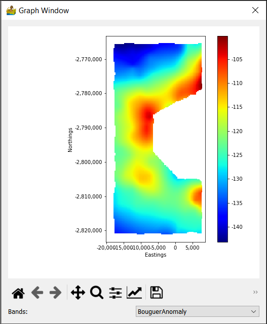

Raster Analysis: Context Menu¶
The raster context menus are available for modules which have raster output data. Output data is only available on green modules. To access the context menu, simply right-click a green module.
Select Input Raster Bands¶
This option will allow the user to select which bands to use in the corresponding module that has been right clicked on.
Display/Edit Metadata¶
This module allows for the display and custom editing of metadata associated with raster images. It is especially useful for defining nodata values or band names.
Band Name: Shows the current name of a raster band within the dataset.
Top Left X-Coordinate: Raster X coordinate in the NW corner of the dataset.
Top Left Y-Coordinate: Raster Y coordinate in the NW corner of the dataset.
X-Dimension: width of a grid cell (in the x-direction).
Y-Dimension: height of a grid cell (in the y-direction).
Null/Nodata Value: A unique value assigned to areas of the dataset with no data.
Rows: Number of rows in the dataset.
Columns: Number of columns in the dataset.
Dataset minimum: Minimum Z value in the dataset.
Dataset maximum: Maximum Z value in the dataset.
Dataset mean: Mean Z value in the dataset.
Dataset units: A label used in graphs to denote the units of Z.
Input Projection: Current projection assigned to the raster band. It can be reassigned, but note that this does not reproject the data.
Basic Statistics¶
This shows statistics with respect to the output data. The statistics can be saved in a text file. They include:
Minimum
Maximum
Mean
Standard Deviation
Median
Median Absolute Deviation
Number of samples
Number of columns
Number of rows
Skewness
Kurtosis
Show Raster Data¶
This is convenient image display for raster data. The band can be selected for multiband data. For more display options, used the Raster Data Interpretation module.
Show Anaglyph¶
An anaglyph of the raster data (3D image) can be displayed. This type of display needs glasses to see the 3D effect. Red-Green glasses are a common type. Options are:
Full Image - shows a full image of the data
Contour - slider to display a simple contour version of the data
Bands - dropdown to choose the band to display
Type - Choice for which type of anaglyph to calculate. This can be Dubois (red-green), green-magenta, amber-blue, True (red-green), gray (red-green), optimised (red-green)
Colour Bar - colours to map to the image.
Scale
Image angle
Sunshade
Show Surface¶
This shows a simple surface formed by the data.
Show Hexbin Plot¶
A hexbin plot is a type of scatter gram, where the points on the scatter gram are binned, and the amplitude of the bins are shown in colour. The scale of the amplitudes is given in log in order to increase the amount of information on the plot.
Show Histogram¶
This shows the histogram for a band of data.

Show 2D Correlation Coefficients¶
The 2D correlation coefficients show the degree of correlation between all the bands in a dataset. It is sometimes used in cluster analysis as a preparatory step in order to exclude bands of information which are too similar.

Export Data¶
This exports the raster data into a variety of raster formats, including ENVI, ER Mapper, GeoTIFF, Geosoft GXF and Surfer. In most cases the GDAL library was used.